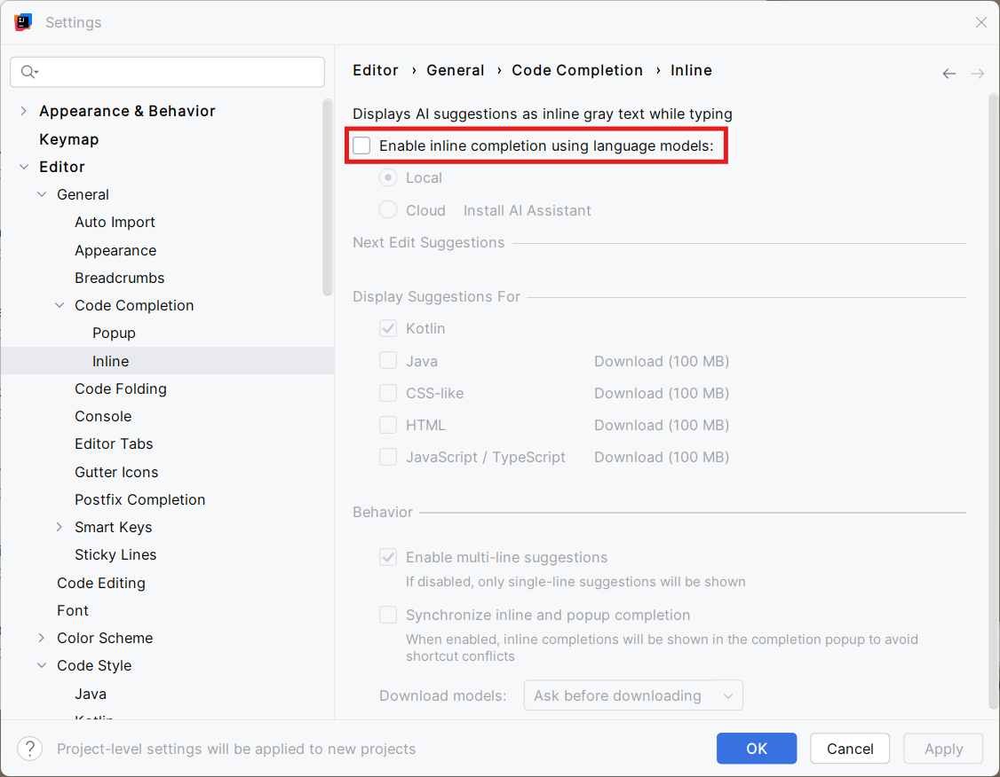

Uitschakelen 'inline completion' ⚠️verplicht⚠️
Tijdens het maken van oefeningen en op het examen is het gebruik van inline completion (AI autocompletion) niet toegestaan.
Stappenplan
- Start IntelliJ op
- Open het Settings-menu:
- Windows/Linux: Ctrl + Alt + S
- macOS: Cmd + ,
- Navigeer in het linkermenu naar Editor > General > Code Completion > Inline
- Selecteer de sectie Inline en vink het vakje bij 'Enable inline completion…' uit
- Klik op OK (of Apply) om de wijzigingen op te slaan

💡Tip: in IntelliJ kan je steeds dubbel klikken op Shift om een 'Search everywhere' zoekactie te starten. Dubbel Shift en in de zoekbalk 'inline' intikken brengt je direct naar de gewenste sectie...